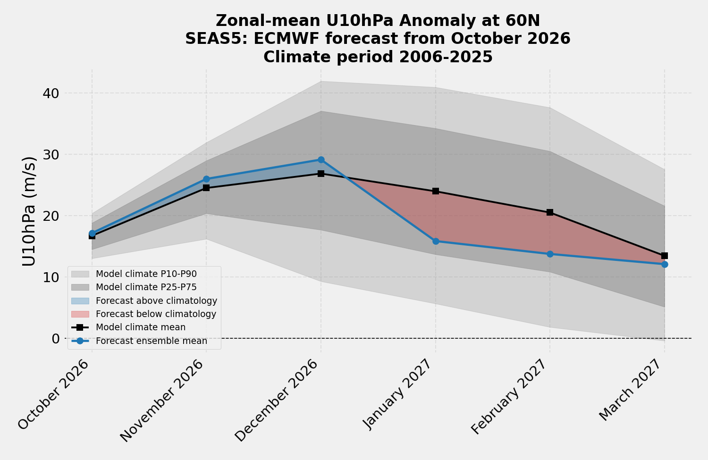

Weather Programmer / seasonal
ECMWF SEAS5 monthly outlook for the next six months. The polar vortex chart is the zonal-mean 10 hPa wind at 60°N. Temperature, precipitation, solar radiation, and wind are point forecasts from the same initialization once those graphics are published.
Loading latest init…
